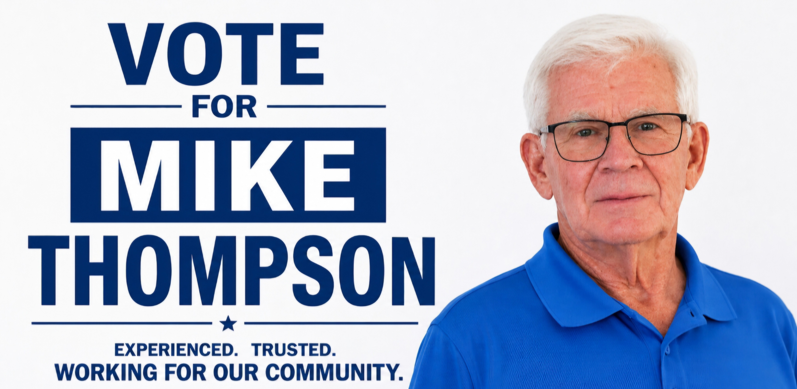

01
Roads & Infrastructure
Keep roads, bridges, drainage, water and wastewater infrastructure maintained and planned for the long term. Fix it before it fails.

Candidate for South Dundas Council
CANDIDATE FOR SOUTH DUNDAS COUNCIL
Common sense. Accountability. Community.
I'm not a career politician — I'm your neighbour. I'm running because I care about South Dundas and want to help build a strong community for families, seniors, farmers, businesses and future generations.
See My PrioritiesABOUT MIKE
I was born and raised in the Land of Milk and Honey known as Dundas County, and I'm proud to call South Dundas home.
My working career included laboratory analysis, nuclear health physics, customer service and electrical work. Those experiences taught me the importance of accuracy, safety, procedures, responsibility and accountability.
I've also been involved in community organizations and volunteer activities throughout South Dundas. I believe good municipal decisions should be based on facts, careful consideration and the long-term interests of our community.
MY PRIORITIES
Keep roads, bridges, drainage, water and wastewater infrastructure maintained and planned for the long term. Fix it before it fails.
Treat every taxpayer dollar as important. Support fair, predictable taxation and careful decisions about municipal spending.
Encourage appropriate economic development, good jobs and attainable housing while protecting the character of our existing communities.
Support the services, volunteers, farmers, businesses, seniors and families that make South Dundas a great place to live.
COMMUNITY
Community is more than a word. It is the people who volunteer, organize events, help their neighbours and give their time to make South Dundas a better place.
My community involvement has included neighbourhood watch, waterfront and Canada Day activities, the Committee of Adjustment, Lions Club activities, Meals on Wheels and local roadside cleanup.
“Good decisions start with good information — and they should always consider the long-term impact on taxpayers.”
— Mike ThompsonTHE CHOICE IS YOURS
I would be honoured to serve as your South Dundas Councillor.
CONTACT
Have a question, concern or idea for South Dundas? I'd like to hear from you.